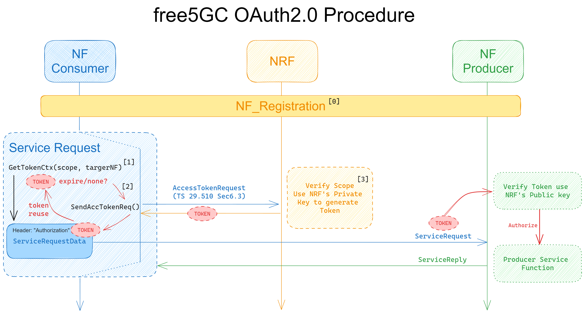
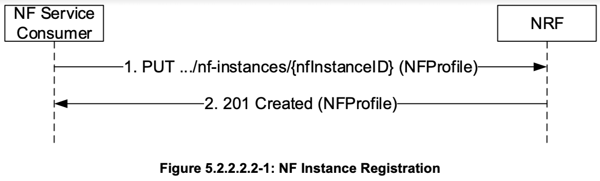
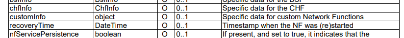

free5GC OAuth2 Design
Note
Author: Andy Chen (CTFang, Tsung-Fang Chen)
Date: 2024/02/22
We release OAuth2 on SBI in free5GC v3.4.0. This article shows you how we design OAuth2 in free5GC.
This is the OAuth2 Procedure we released in the blog.

Token/Key Management
- The NRF utilizes its private key to generate tokens.
- NF Service Producers utilize the NRF's public key to validate the tokens.
Instead of using the NF's public key to generate tokens, we opt for a simpler key management approach.
In this design, the NRF only needs to securely store its private key, while other NFs only need to know the location of the NRF's certificate. This simplifies key management for the NRF, as it avoids the need to manage numerous NF public keys.
Enable OAuth2
NRF
- NRF acts as the decider on whether to use OAuth2 in the service-based interface (SBI).
- First, we should set
oauthin the NRF configuration file.
configuration:
sbi: # Service-based interface information
oauth: true
- When NFs initiate NF_Registration, then NRF would put the
oauth2setting incustomInfo, an element of NFProfile, back to NFs.


NFs
We use part of the SMF code, for explanation.
-
Service Consumer
- We define
GetTokenCtx()in each NF.
func (c *SMFContext) GetTokenCtx(serviceName models.ServiceName, targetNF models.NfType) ( context.Context, *models.ProblemDetails, error, ) { if !c.OAuth2Required { return context.TODO(), nil, nil } return oauth.GetTokenCtx(models.NfType_SMF, targetNF, c.NfInstanceID, c.NrfUri, string(serviceName)) }-
oauth.GetTokenCtx()in openapi would use the information provided by NF to get token from NRF, and return acontextwith value (token) in HTTP header. -
Then NFs could use this function to easily get a context with token in the header.
ctx, pd, err := smf_context.GetSelf().GetTokenCtx(models.ServiceName_NNRF_DISC, models.NfType_NRF) if err != nil { return pd, err } result, httpResp, localErr := smf_context.GetSelf(). NFDiscoveryClient. NFInstancesStoreApi. SearchNFInstances(ctx, models.NfType_UDM, models.NfType_SMF, &localVarOptionals)
- We define
-
Service Producer
-
Validating the access token when there is a service request, the NF must use the NRF's public key to ensure security. So, we have to tell the NF the location of the NRF certificate. (We can retrieve the Public key from the certificate).
configuration: nrfCertPem: cert/nrf.pem # NRF Certificate -
We apply
AuthorizationCheck()viarouter.use(). (Take the Nsmf_pdusession service, for example).routerAuthorizationCheck := util_oauth.NewRouterAuthorizationCheck(models.ServiceName_NSMF_PDUSESSION) group.Use(func(c *gin.Context) { routerAuthorizationCheck.Check(c, smf_context.GetSelf()) })
-
Note
- The OAM service currently does not enfore OAuth2.
- The free5GC webconsole is not considered an NF in the 5G core network, but it utilizes the OAM service to access the necessary information.
- The NRF will not issue tokens to the unregisterd NFs.
Related PRs/Files
- General functions used by all NF: openapi/oauth
- free5gc/NRF PR#27
- free5gc/free5gcPR#525
- There would be related Pull Request for each NF.